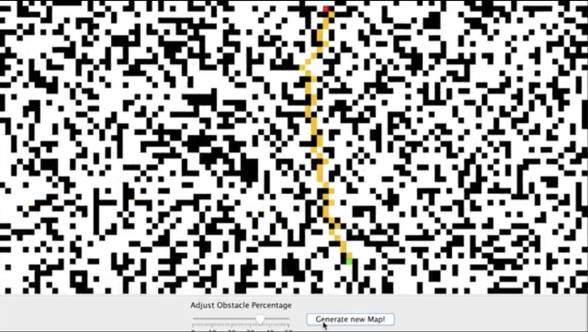

Articles
Make sure you stay up to date with the latest articles posted. To see all the articles written, see this page.
Welcome to my github pages site. This site is used to showcase my work and to navigate my public github repositories.
I'm a developer Developer with a passion for technology, problem-solving, and continuous learning.
Curious by nature, with interests spanning software, mathematics, engineering, AI and the natural sciences.
Make sure you stay up to date with the latest articles posted. To see all the articles written, see this page.
Below you find an overview of a small portfolio of projects that I've worked with.
TODO: ADD SOME SUITABLE WAY OF VISUALIZING PROJECTS HERE....
Reporting module
This project implements a reporting module, that allows for issues to be reported automatically by the system itself, if an issue were to be detected.

A* Pathfinding
This project is a simple implementation of the 'A*' - pathfinding algorithm. The project was done to understant the concept of pathfinding algorithms better, and as such touches upon some basic concepts on how these algorithms can be implemented.
LSTM Neural Network
Developed a proof-of-concept Long Short-Term Memory (LSTM) neural network in Python using PyTorch. The project focused on gaining hands-on experience with recurrent neural networks and understanding how LSTMs can retain and use information across longer sequences. LSTM networks are particularly well suited for sequential and time-series data and can be used for applications such as forecasting, anomaly detection, sequence classification, and natural language processing.